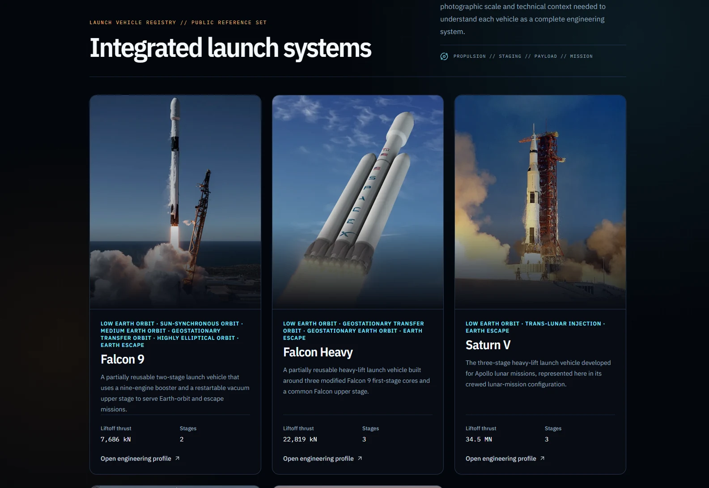

Software · Aerospace web application · 2026
ORBIX
ORBIX currently covers 10 vehicles, five aircraft and five launch vehicles. Each value keeps its units, qualifier, and source. Users can compare vehicles, work through 33 Engineering Lab modules across six workflows, and use mission tools for preparation, analysis, simulation, and replay.
Next.js · React · TypeScript · Tailwind CSS · Vitest · Playwright
